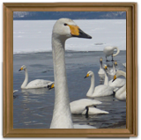

古川 幸子
■メッセージ：
２００９年２月に新潟で渡りの白鳥と出会い一目惚れ。
以降シーズン中は日本各地の飛来地を訪れ、白鳥と遊ぶ。
■経歴：
２０１３年１月～東京を中心に「白鳥の湖へようこそ」と題して、
白鳥の写真に詞や詩文を添えて展示会を定期的に開催。
今回を合わせ、これまで１２ヶ所で展示を開催。
個展は今回で８度目。
■告知
2014/11/16～11/30 秋葉原カメラのキタムラ中古買取センター
2014/12/11～12/20 八王子市挟間 ギャラリーカフェさくら
2015/2/26～3/17 江東区亀戸くらもち珈琲ミニギャラリー
2015/3/30～5/2 文京区小石川カフェギャラリーヒュフテ
■ブログ：http://ameblo.jp/swan0317g/
■Fecebook：https://www.facebook.com/sachiko.furukawa.334
■Twitter：https://twitter.com/agnes0317g
■掲載期間： １０月１６日～１０月３１日
■お問い合わせ：「オフィス リェーべジ」 agnes0317g@yahoo.co.jp